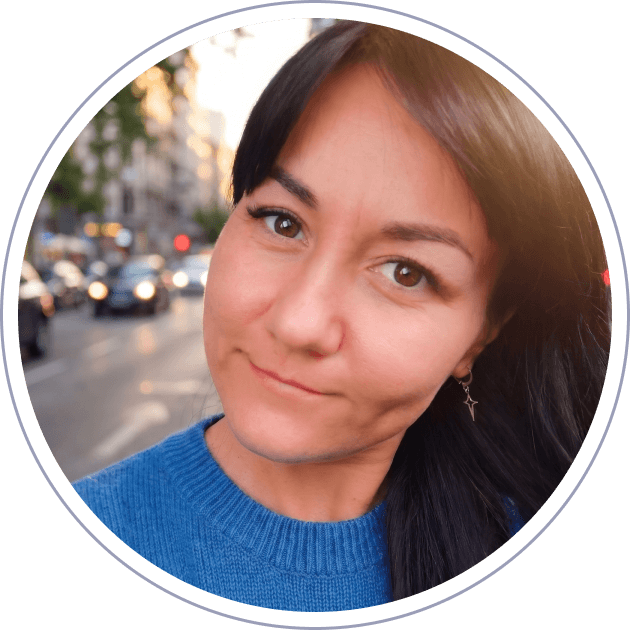

Создаю визуальный контент с помощью передовых
AI-инструментов для e-commerce и маркетплейсов

Создаю визуальный контент с помощью передовых
AI-инструментов для e-commerce и маркетплейсов

Изучаю ЦА и конкурентов, нахожу точки роста для визуального контента
Создаю контент с помощью Midjourney, NanoBanana, Runway, Blender
Проверяю гипотезы, оставляю лучшее — так CTR вырос на 20%
Готовый rich-контент, инфографика и видео — быстро и без правок